第 4 章 基于几何的位姿估计¶
本页目录
Robotic Manipulation: Perception, Planning, and Control
本章目录 · 章节概览
本章目录¶
上一章已经给出了移动物体的初步方案，但有一个关键假设，让它还无法用于真实机器人：我们事先知道物体的初始位姿。本章将迈出取消这一假设的第一步，利用机器人深度相机获得的信息来估计位姿。这些方法最适合已知物体，例如已有其几何网格模型，并且环境比较整洁的情况；它们也会成为后面更复杂方法的基准。
本章采用几何方法。如今的感知系统并非都显式使用几何；一些深度学习方法直接学习从像素到输出的映射。不过，许多深度学习方法仍以几何为基础，近年的几何处理技术也经历了快速发展，包括稠密重建、从文本生成三维模型等。除了机器人操作，自动驾驶和虚拟、增强现实的需求也推动了这些进展，带来了更先进的传感器和出色的新算法。
我们从几何出发，是为了给后续的感知学习打好基础。不过先说明一点：本章选择“位姿估计”作为目标，是因为它具体且马上能派上用场。在我们最先进的操作系统中，我反而尽量避免依赖显式位姿估计。它不仅假定物体已知，而且在视野不完整或存在遮挡时，很难准确估计位姿；很多操作任务其实也不需要知道得这么精确。
4.1 相机与深度传感器¶
像挑选机械臂和夹爪一样，为机器人或环境配置传感器也有许多选择。近几年，这些传感器的质量提升、成本降低和尺寸缩小，甚至比机械臂的发展还显著。手机产业是主要推动力，自动驾驶的竞争也推动了高端传感器的发展。
硬件的进步有时会彻底改变算法思路。例如，当传感器的分辨率和帧率足够高，两帧之间的场景变化就很小，估计会容易许多。这无疑也是过去十多年同步定位与建图（SLAM）快速发展的原因之一。
你可能觉得，操作任务最重要的传感器应该是触觉传感器——也许确实如此。但目前实际系统主要依靠相机和测距传感器。至少应该先考虑视觉：如果不知道该到哪里触碰，触觉传感器也无从发挥作用。
传统相机按一定帧率输出彩色图像，当然很重要。不过，机器人还大量使用直接测量相机与环境之间距离、也就是深度的传感器。这些设备有的同时输出颜色，有的只输出深度。
4.1.1 深度传感器¶
主要包括 RGB-D 相机，例如飞行时间（ToF）相机、投射纹理的双目相机等，以及激光雷达（LiDAR）。
本课程使用 Intel RealSense D415 相机。
单目深度估计。
基于学习的双目匹配，见 参考文献 1。
4.1.2 仿真¶
D415 这样的相机可以按不同保真度仿真。我们先从“理想”RGB-D 相机开始：深度图的每个像素，给出对应像素方向上的真实几何深度。在 Drake 中，这由 RgbdSensor 系统实现，可以直接与 SceneGraph 连接。
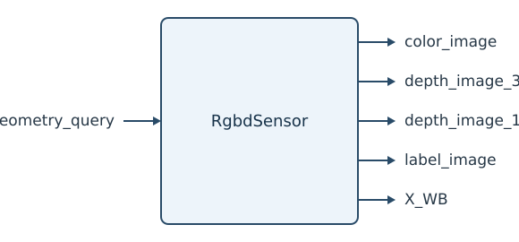
这里的信号与系统抽象，封装了大量复杂工作。系统内部是一套完整的渲染引擎，类似高端游戏中的引擎。Drake 支持多种渲染引擎；课程主要使用基于 OpenGL、适合实时仿真的渲染器，它建立在 VTK 之上。Drake 还可以连接采用光线追踪的高质量基于物理的渲染（PBR）引擎，例如 Blender 的 Cycles 渲染器，参见 Drake-Blender 项目。这些工具适合生成高质量图像，用于训练深度感知系统，或制作展示材料。
示例 4.1 仿真 RGB-D 相机¶
运行示例：在 Colab 中打开
先看一个简单例子。我在场景中放入一个物体，即 YCB 数据集 中的芥末酱瓶，并在系统图中加入 RgbdSensor。连接完成后，只需计算输出端口，就能取得彩色图和深度图：
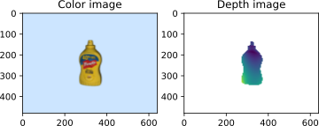
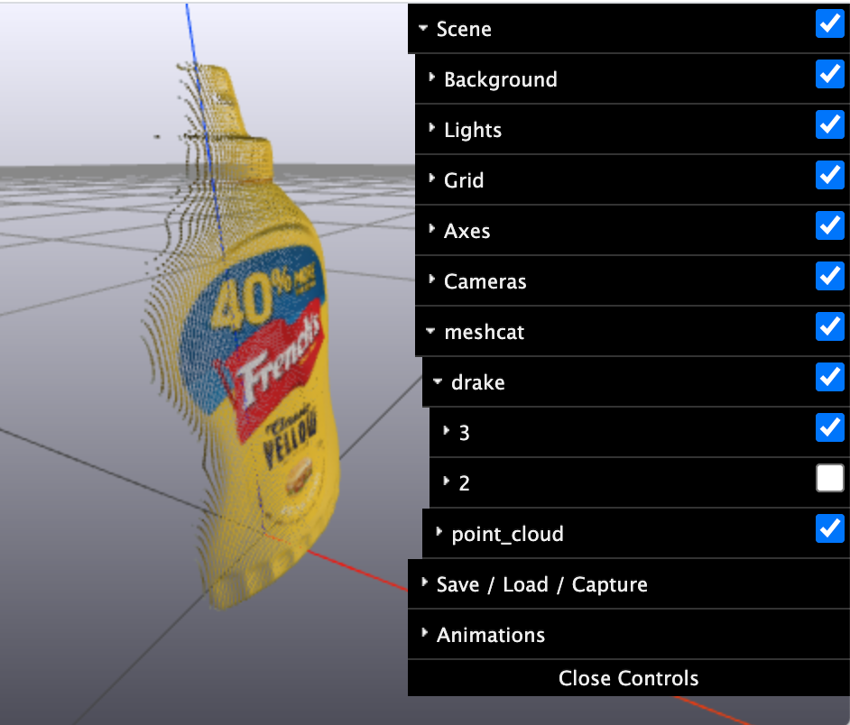
请花一点时间看看 MeshCat 可视化，可在这里打开。里面有相机及其坐标系，也有熟悉的芥末酱瓶，不过瓶子看起来可能有点奇怪，因为我同时显示了真实模型和相机生成的点云。在 MeshCat 界面中取消显示真实模型，见右图，就能只看点云。
除了阅读代码，也可以通过系统框图了解各模块之间的关系。这张系统图展示了本例使用的系统结构。

在 HardwareStation 工作流程中，只要在场景数据（例如 YAML 描述）中声明相机，HardwareStation 系统图内部就会自动加入 RgbdSensors，并把它们的输出端口暴露出来，与真实硬件的接口对应。
4.1.2.1 传感器噪声与深度缺失¶
真实深度传感器当然远非理想。深度误差并不是简单的高斯噪声，还取决于光照、物体表面法线、材料的视觉属性等因素；颜色通道也只是近似。即使用高端渲染器，也要为场景提供足够准确的几何、材料和光源，才能得到好结果，而真实环境的细节很难完整复现。等掌握一些基本操作之后，我们会再看真实传感器数据，以及模型与实物之间的差距。
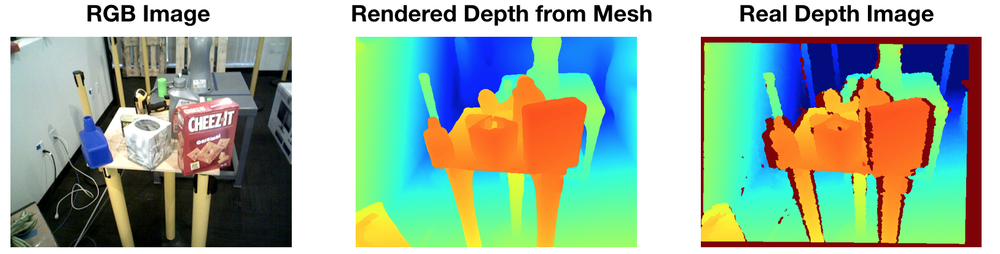
图 4.1：真实深度传感器的输出并不干净。最右图的红色像素表示未获得有效回波，此时传感器返回“最大深度”。这种缺失在物体边缘和反光物体上尤其常见。图片转载自 参考文献 2。
4.1.2.2 遮挡与不完整视野¶
上面的芥末酱瓶清楚展示了相机的一大局限：它只能看到视线所及之处。想看瓶子背面，就得移动相机；瓶子放在桌上时，想看底部，还得把它拿起来。杂乱场景更困难，其他物体会挡住瓶子。即使环境整洁，安装在头部或桌边的相机，也经常被正在操作的机器人手臂遮挡。最希望传感器发挥作用的时候，它反而可能什么都看不到！
一种常见做法是把深度相机装在机器人腕部，以改善视野，但仍不能彻底解决问题。所有深度传感器都有最大、最小工作距离。RealSense D415 的有效匹配范围大约是 0.3–1.5 m。因此，接近物体的最后 30 cm——恰恰是我们希望相机最有用的阶段——物体反而会从深度数据中消失。
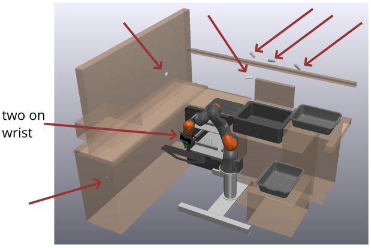
图 4.2：条件允许时，我们会尽量多装相机。TRI 的这个餐具装载实验平台一共安装了八台相机，但遮挡问题仍然存在。
4.2 几何的表示方式¶
三维几何有多种表示，各自适合不同的计算。它们通常可以相互转换，但有时会损失信息。例如三角面片表面网格、四面体体网格、体素或占据栅格，以及符号距离函数、神经辐射场（NeRF）等隐式表示。后者近年在三维视觉的深度学习中又变得很流行，见 参考文献 3、参考文献 4。这里先从深度图和点云开始。
深度相机输出一张图，每个像素是一个数，表示相机沿该像素方向到最近物体的距离。结合相机内参，例如镜头参数，Drake 用 CameraInfo 存储，就能将深度图转换为三维点集 \(s_i\)。这里使用 \(s\)，是因为后面的算法通常将它们称为“场景点”。这些点在某个参考坐标系下表达，参考系由刚体变换指定，也可以附带颜色等信息；这就是点云表示。Drake 的 DepthImageToPointCloud 系统默认使用相机坐标系 \(^CX^{s_i}\)，也支持通过可选输入端口接收 \(^PX^C\)，方便将点转换到世界坐标系等其他坐标系中。
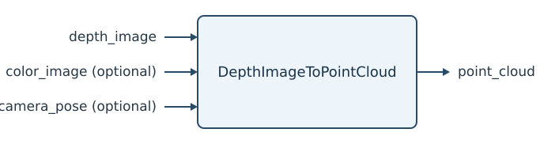
随着深度传感器普及，已经出现许多点云几何操作和表示转换的工具库。Drake 直接实现了不少基本操作；如果需要更多功能，还可以使用开源的 Open3D。许多较早的项目使用 Point Cloud Library（PCL），它如今已停止发展，不过文档仍很有参考价值。
注意，深度图转成点云会丢失一部分信息：从相机出发、到达这个点的那条射线。结合相机位姿，深度图不仅告诉我们“这个点有几何表面”，也告诉我们“相机到这个点之间的直线路径上没有几何物体”。后面的算法会利用这条信息，所以不要把深度图完全丢掉。更一般地说，各种几何表示都有优缺点；同时保留多种表示，并按需要相互转换，是很常见的做法。
4.3 已知对应关系的点云配准¶
现在回到本章的目标：已知物体位于机器人的工作空间中，我们从深度相机获得了点云，怎样估计物体位姿 \(X^O\)？
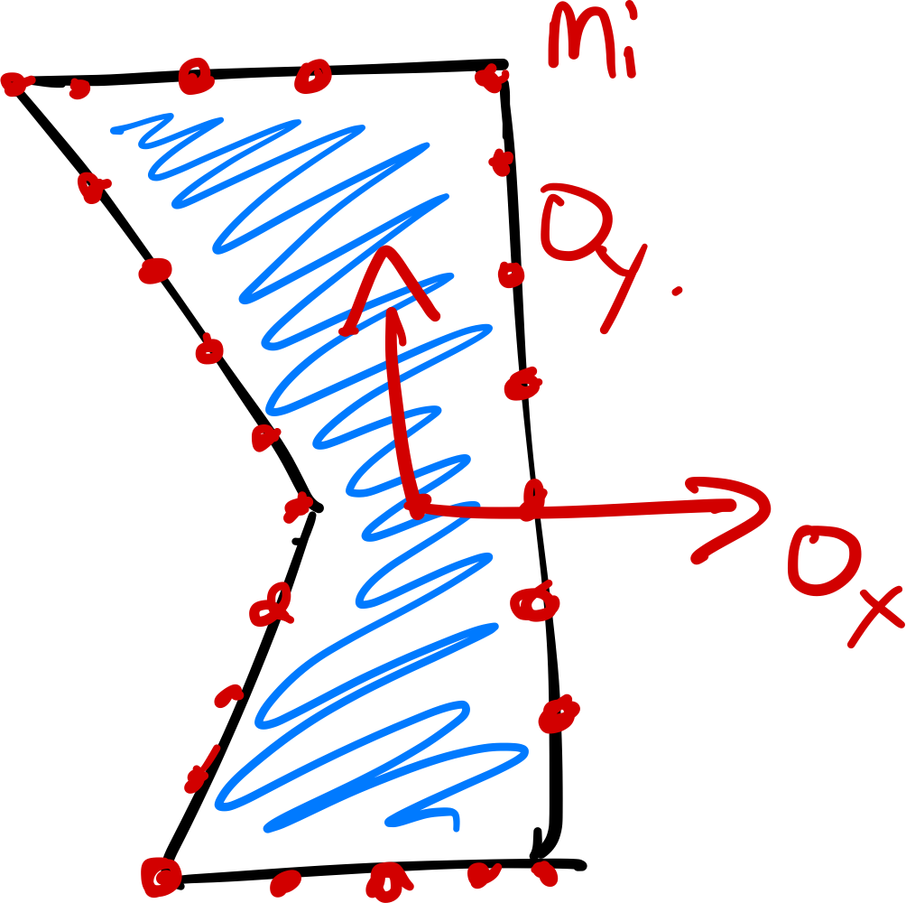
一个自然且研究充分的建模方式来自点云配准，也叫点集配准或扫描匹配。给定两组点云，求一个刚体变换，使它们尽可能对齐。因此，我们暂时也用点云表示物体模型，把模型点记为 \(m_i\)，并在物体坐标系下描述其位置：\(^OX^{m_i}.\)
第二组点云是深度相机获得的场景点 \(s_i\)，通过相机内参转换到相机坐标系下，记为 \(^CX^{s_i}\)。模型点和场景点的数量分别记为 \(N_m\)、\(N_s\)。
暂时假设我们也知道 \(X^C.\)。这个假设合理吗？如果相机装在腕部，可以通过机械臂的正运动学求得；如果装在环境中，则需要知道相机在世界坐标系中的位姿。不过，这些位姿的微小误差，也可能使点云产生明显偏差，因此我们很重视相机外参标定；附录中提供了标定代码。如果机械臂安装在移动底盘上，上述讨论仍成立，只是通常应在机器人坐标系、而非世界坐标系中进行配准。
本节第二个重要假设是“已知对应关系”。这里的对应关系，是指每个场景点都能与某个模型点配对。例如，如果每个点都有独特颜色，且相机能可靠识别，就可能实现。这在实践中并不现实，但适合用作起点。用对应关系向量 \(c \in [1,N_m]^{N_s}\) 表示这个映射，其中 \(c_i = j\) 表示场景点 \(s_i\) 对应模型点 \(m_j\)。注意，这不要求一一对应：每个场景点都有模型点与之对应，但并非每个模型点都被观测到，多个场景点也可能对应同一个模型点。
这样，点云配准就变成一个逆运动学问题。把模型点和场景点写到共同的世界坐标系下：
，就只剩一个未知变换 \(X^O\) 需要求解。上一章我建议使用微分运动学而不是逆运动学，这里为什么变了？微分运动学在感知中仍然有用，例如得到初始位姿之后，可以用它持续跟踪。但机器人可以直接读取关节传感器获知当前状态；视觉感知却必须至少先解一次这个更困难的初始估计问题。
求解 \(X^O\) 意味着什么？每个模型点在满足 \(p^{s_i} \in \mathbb{R}^3.\) 时都给出三个约束。未知数的数量取决于位姿的表示方式，但约束数量通常远多于未知数。把每个点都作为相对位姿的硬约束，也会对测量噪声很敏感。因此，更好的做法是找一个尽量解释观测数据的位姿，例如求最小二乘解：
这里 \(\mathrm{SE}(3)\) 是“特殊欧氏群”的记号，表示 \(X\) 必须是有效的刚体变换。
接下来选一种具体表示：这里使用 3×3 旋转矩阵，下面的方法也有等价的四元数形式，见 参考文献 5。将旋转矩阵和平移向量的各个分量作为决策变量，可以写成：
并非每个 3×3 矩阵都是旋转矩阵，所以必须加入约束，保证 \(R\) 是有效旋转。其实 \(R^T = R^{-1}\) 已经几乎够了，它意味着 \(\det(R) = \pm 1.\)。但若矩阵满足该约束且 \(\det(R) = -1\)，它就属于“非正常旋转（improper rotation）”，相当于旋转再加上沿旋转轴的镜像反射。
看看这个优化问题的类型。采用旋转矩阵后，\(p + R{}^Op^{m_{c_i}} - X^C {^Cp^{s_i}}\) 对决策变量是线性的，可以把它理解为 \(Ax \approx b\)，因此目标函数是凸二次函数。第一个约束是二次等式：写成 \(RR^T=I\) 后，共有九个约束，每个都对 \(R\) 的元素呈二次关系。行列式约束则对 \(R\) 的元素呈三次关系。
示例 4.2 二维的纯旋转点集配准¶
我想直观展示这个优化问题，但 9+3 个决策变量实在难画。先假设场景点与模型点之间只有旋转，这就是著名的 Wahba 问题；再把问题从三维简化到二维。
二维旋转矩阵只需两个变量就能线性参数化：
此时，\(RR^T=I\) 和行列式约束完全相同，都要求 \(a^2 + b^2 = 1.\)。
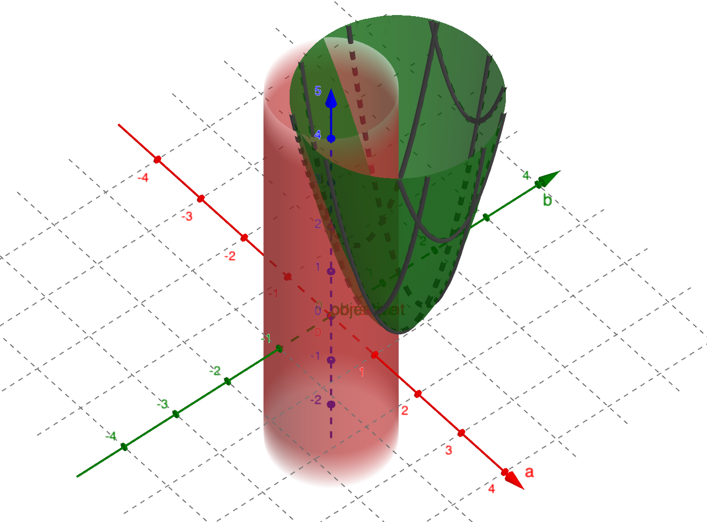
图 4.3：图中 \(x\)、\(y\) 轴分别对应定义二维旋转矩阵 \(R\) 的参数 \(a\)、\(b\)。绿色的二次曲面是目标函数 \(\sum_i \| R \: {}^O p^{m_{c_i}} - p^{s_i}\|^2,\)，红色的空心圆柱表示旋转矩阵约束。点击打开交互版本。
这和你预期的一样吗？图中只用了两对模型点与场景点；增加点数会改变二次曲面的形状，但不会改变其最小值所在的位置。在交互版本中还加了滑块，可以调节参数 \(\theta\)，控制由 \(R\) 描述的真实旋转。试试看！
没有测量噪声时，也就是场景点恰好由模型点经过旋转得到时，目标函数的无约束最小值已经满足约束。但只要给点加一点噪声，就不再如此，约束便开始发挥作用。
三维情形的几何结构类似，只是维数高得多。希望这张图能帮助你理解：为什么这个问题会有一个基于奇异值分解（SVD）的漂亮数值解。
平移怎么办？有一个关键观察，可以把旋转优化与平移优化分开：点之间的相对位置受旋转影响，却不受平移影响。因此，先以物体上某个基准点为原点描述所有点，就能单独求旋转，再反推出平移。对于最小二乘目标，最合适的基准点就是欧氏度量下的点集中心；如果把每个点视为质量相同的质点，它就是质心。
因此，要求解
，先定义模型点和场景点的中心 \(\bar{m}\)、\(\bar{s}\)：
如果好奇，这也可以通过对拉格朗日函数关于 \(p\) 求梯度并令其为零得到：
但别忘了上面的几何解释。这个结果说明，可以将等式右侧代入目标函数中的 \(p\)，单独求解 \(R\)。
为求 \(R\)，先构造数据矩阵
，再用 SVD 得到 \(W = U \Sigma V^T\)。最优解为：
，其中 \(D\) 是对角矩阵，对角元素为 \([1, 1, \det(UV^T)]\) 参考文献 6。看起来有些神奇，但 SVD 中将奇异值替换为 1，实际上给出了到正交矩阵集合的最优投影；额外的对角矩阵则保证结果不会是非正常旋转。相关推导很多，不过不少文献直接省略行列式约束，没有处理反射问题。我很早就喜欢的一篇推导是 参考文献 7 的第 3 节。
示例 4.3 已知对应关系的点云配准¶
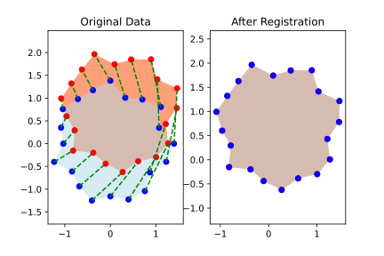
示例代码在 \(x\)–\(y\) 平面随机生成一组点，作为随机物体，再施加一个随机二维刚体变换。蓝点是模型坐标系中的模型点，红点是场景点，绿色虚线是准确的对应关系。右图再次绘出两组点，但这次用估计位姿把它们都转换到世界坐标系。和预期一致，算法准确恢复了真实变换。
运行示例：在 Colab 中打开
关键在于：一旦对应关系已知，就有高效、稳健的数值方法估计位姿。
4.4 迭代最近点（ICP）¶
那么，对应关系从哪里来？如果已知物体位姿，其实很容易：将两组点转换到同一坐标系后，每个场景点对应的模型点，就是离它最近的点。
这启发了一种自然的迭代方法：从初始位姿猜测出发，按最近点建立对应关系，再用这些对应关系更新位姿估计。这就是点云配准中著名且广泛使用的迭代最近点（Iterative Closest Point，ICP）算法，尽管它的局限也早已为人熟知。
具体来说，用 \(\hat{X}^O\) 表示估计的物体位姿，\(\hat{c}\) 表示估计的对应关系。“最近点”这一步为：
即对变换后的每个场景点，找欧氏距离最近的模型点。这是经典的最近邻搜索问题，借助优化的数据结构可以高效求解。例如，Open3D 使用 FLANN，见 参考文献 8。
同时求位姿与对应关系很困难，但 ICP 将它们分开交替求解，使每一部分都容易处理。类似迭代也常见于双线性优化、期望最大化等问题。必须记住：它求的是非凸优化问题的局部解，因此会陷入局部极小值。
示例 4.4 迭代最近点¶
这里展示 ICP 对随机二维物体的配准过程。蓝点是模型点，红点是场景点，绿色虚线是对应关系。建议亲自运行代码看看。
动画恰好展示了一次收敛到真实最优解的情况，但算法更多时候会陷入局部极小值。逐步观察有助于建立直觉：只要对应关系全部正确，位姿估计就会得到精确解。因此，收敛前的每一步，至少还有几对错误对应。仔细找找它们！
运行示例：在 Colab 中打开
对这些局部极小值的理解，催生了许多 ICP 变体，包括点到平面 ICP、法线 ICP、利用颜色的 ICP、基于特征的 ICP 等。其中基于“点对特征”的一种变体，在几乎每年举行的物体位姿估计挑战中表现尤其出色，见 参考文献 9、参考文献 10。
4.5 处理不完整视野与离群点¶
前面的例子已足够展示 ICP 的局部极小值问题，但点云本身仍理想得不现实。点云配准广泛用于许多领域，文献中的方法并不都适合机器人面对的这类杂乱数据。
示例 4.5 对不理想点云运行 ICP¶
notebook 提供了几个参数，可以加入离群点，即不对应任何模型点的场景点，也可以加入噪声或限制可见范围。请分别尝试，再组合起来看看。
运行示例：在 Colab 中打开
图 4.4：带离群点的 ICP 示例。离群点在工作空间内按均匀分布随机生成。
图 4.5：在场景点位置加入高斯噪声后的 ICP 示例。
图 4.6：只能看到部分物体时的 ICP 示例。结果并不总这么糟，但看到这次运行时，我实在忍不住拿它做例子！
4.5.1 检测离群点¶
一旦有了合理的位姿估计 \(X^O\)，离群点就容易识别了。每个场景点对目标函数的贡献，是它与对应模型点之间距离的平方。距离过大的点可以标为离群点并从点云移除，再重新估计位姿。许多 ICP 实现，包括 Open3D 的这个实现，都提供“最大对应距离”参数来做这件事。
这又成了先有鸡还是先有蛋的问题：识别离群点需要合理的位姿估计，但离群点很多时，恰恰难以获得这样的估计。一个常用于 ICP 初始化的方法是随机采样一致性（RANdom SAmple Consensus，RANSAC），见 参考文献 11。它反复随机选取少量“种子”点，为每个子集计算位姿，再统计距离小于阈值的“内点”。内点最多的子集获胜，其位姿可作为 ICP 的起点。
还有一个很巧妙的思路。前面利用点之间的相对位置与平移无关，将旋转和平移分开。进一步看，点间距离其实对旋转、平移都不变。这一性质传统上用于将尺度估计与旋转、平移估计分开；本章暂不考虑尺度变化，因为当前任务并不需要。在 参考文献 12 中，作者用它在尚无初始位姿时剔除离群点：如果两个场景点之间的距离，与任意两个模型点之间的距离都不相符，那么这两个场景点至少有一个是离群点。按这个条件寻找最大的内点集合，对应图中的最大团问题。可以在较强假设下证明最大团就是最佳匹配，也可以把它作为实用启发式。大点云求最大团太贵时，还可采用保守近似。
示例 4.6 对应关系图中的最大团¶
下面是 参考文献 12 中最大团思路的简单例子。我和作者 Hank 一起推敲了它，确保自己理解了他的想法。
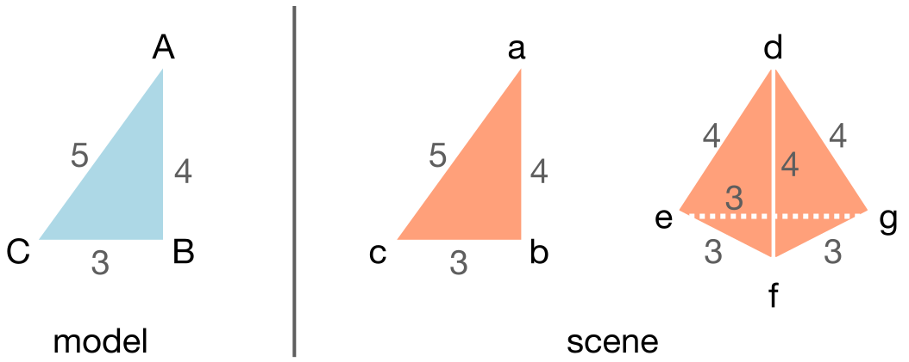
左侧模型是三角形，顶点标为 [\(A\), \(B\), \(C\)]。右侧场景有同样的三角形 [\(a\), \(b\), \(c\)]，产生三个点对距离；还多了一个金字塔，它共有六组匹配距离，其中三组长度为 3，三组为 4。金字塔上的错误对应，会不会形成比真实三角形 [\(A-a\), \(B-b\), \(C-c\)] 更大的团？
先假设任意模型点都可能对应任意场景点，构造点对距离图。每个可能对应关系都是一个节点，例如 \(A-e\) 表示模型点 \(A\) 与场景点 \(e\) 的对应。仅当 \(A\)、\(B\) 之间的距离等于 \(e\)、\(f\) 之间的距离时，才在节点 \((A-e)\) 与 \((B-f)\) 之间连边。
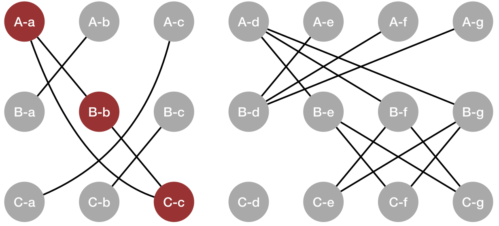
现在就能看出找团的意义了。涉及金字塔的最大团只有两个节点，场景三角形的最大团却有三个，我将它标成了红色。因此，这个例子中的最大团确实恢复了真实对应关系。
以上只是众多离群点剔除算法与启发式中的两个例子。还值得一提的是 参考文献 9：它基于点对特征进行优化的投票、聚类，效率很高，多年来在在线位姿估计基准中表现出色。
4.5.2 点云分割¶
离群点不一定来自深度相机的错误回波，更多时候来自场景中的其他物体。即使最简单的任务，目标物体也往往放在桌上或箱内。如果事先知道桌子、箱子的几何，就能删去这些区域的点；也可以用 Crop 把点云裁剪到感兴趣区域。对于简单、整洁的场景，这已经足够，本章的任务也可以这样完成。
更一般地，场景中有多个物体时，仍需要找出目标，例如芥末酱瓶。如果点云配准足够稳健，最优配准应该能够仅将模型点与部分场景点对应起来；这样配准本身就能完成物体检测。可惜，现有算法还不够强。
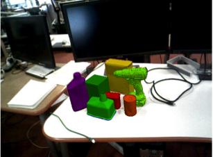
图 4.7：来自 LabelFusion 的多物体场景，见 参考文献 13。
因此，通常先用另一种算法把场景分成若干可能的物体，再对各个分割结果分别配准。基于几何的分割方法很多，见 参考文献 14。但目前我们更常用神经网络做分割，这里就不展开几何方法了。
4.5.3 更一般的对应关系¶
离群点和多物体场景，对现有对应关系提出了挑战。此前用 \(c_i = j\) 表示每个场景点到模型点的对应，算法具有不对称性：场景 \(\Rightarrow\) 模型。选择这个方向，是因为开头芥末酱瓶的例子强调不完整视野。可是一旦考虑桌子和其他物体，也许模型 \(\Rightarrow\) 场景更合适？你可以验证，这只需对 ICP 做很小的修改。但如果既有多个物体，又有不完整视野呢？
一个简单改进是允许 \(c_i\) 取特殊值，表示“无对应”。理想情况下，属于目标物体的场景点对应各自的模型点，离群点和其他物体的点标为“无对应”；被遮挡部分的模型点则没有任何场景点与之对应。
还可以使用更一般的对应矩阵 \(C\in \{0,1\}^{N_s \times N_m}\)：当且仅当场景点 \(i\) 对应模型点 \(j\) 时，\(C_{ij} = 1\)。这样，已知对应关系的估计步骤可写为：
它包含之前的表示：若 \(c_i = j\)，令 \(C_{ij} = 1\)，该行其余元素为零；若场景点 \(i\) 是离群点，就把整行置零。此前的记号更紧凑，体现了最近点计算的不对称性，也明确只需计算 \(N_s\) 个距离。但这个更一般的表示，将带来新的方法。
4.5.4 软对应关系¶
如果不再要求严格的二元对应，而把它放宽为权重 \(C_{ij} \in [0,1]\)，代替 \(C_{ij} \in \{0, 1\}\)，会怎样？这正是相干点漂移（Coherent Point Drift，CPD）算法的核心，见 参考文献 15。CPD 文献通常用高斯混合模型（GMM）进行概率解释。这个视角很有用，但别让术语把问题弄复杂了：最大化高斯似然时，通常先取 \(\log\)，因为它是单调函数，结果就又回到了二次目标函数。
概率解释自然给出了每轮迭代的对应权重：将它理解为给定模型点时场景点的概率，
。这是标准高斯密度，其中 \(\sigma\) 是标准差，\(a_i\) 是使概率和为 1 的归一化常数。离群点的概率也可以自然纳入，只需修改归一化常数。
补充说明：归一化常数的具体形式如下；它主要是实现细节。
归一化常数为：
其中 \(D=3\) 是欧氏空间维数，\(0 \le w \le 1\) 是采样点为离群点的概率，见 参考文献 15。
CPD 因而与 ICP 很相似：交替更新对应权重和位姿估计。位姿步骤几乎不变，只是中心点变为
，数据矩阵变为
。其余步骤，即用 SVD 提取 \(R\)，再由 \(R\) 求 \(p\)，都相同。代码中不一定会直接看到求和符号，因为将点按列放进矩阵后，各步骤都能写成简洁的矩阵运算。
概率视角还给出了每轮更新高斯协方差的方法。参考文献 15 推导了 \(\sigma\) 的估计式。（原文这部分推导尚未整理完成。）
一般认为，CPD 比使用硬对应和二次目标的 ICP 更稳健，因为高斯模型会把离群点的对应权重压到接近零。不过，大点云中计算所有点对距离也更昂贵。在 参考文献 16 中，我们提出一种小改动：让场景点在空间中按高斯分布，而不是围绕模型点建立高斯分布，就又能只对场景点求和。这样既保留了 CPD 的不少稳健性优势，也接近 ICP 的计算效率。
4.5.5 非线性优化¶
到目前为止，所有算法都利用已知对应关系下的 SVD 位姿解，交替估计对应关系和位姿。另一类重要方法则同时求解两者。问题会变成非凸优化，因此同样可能陷入局部极小值。不过，一些研究认为，非线性求解器的运行时间可以与迭代算法相当，例如 参考文献 17。
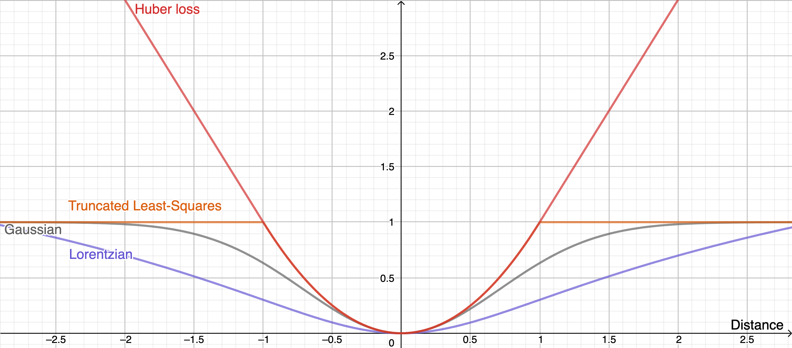
图 4.8：用于稳健配准的几种目标函数。点击打开交互版本。
非线性优化的另一优势，是支持多种目标函数，从而获得类似 CPD 的离群点稳健性。上图画出了几种常见函数；它们的共同特点是逐渐变平，距离大到一定程度后，代价不再继续增加。因此，可以像 CPD 一样，在目标中考虑所有点对：离群点若只贡献常数代价，例如 1，就不会产生关于决策变量的梯度，也不会影响最优解。选一个损失函数 \(l(x)\)，便可写成：
决策变量也更灵活，可以使用最小参数表示，例如二维旋转用 \(\theta\)，三维旋转用欧拉角。目标函数虽更复杂，却可以去掉旋转矩阵约束。
示例 4.7 已知对应关系的非线性位姿估计¶
为了看清这一步究竟失去了什么，先考虑已知对应关系、用最小参数表示位姿的非线性优化。只要不加其他约束，仍可把旋转与平移分开。考察：
现在目标函数是复杂的非线性函数，是否已经出现局部极小值？
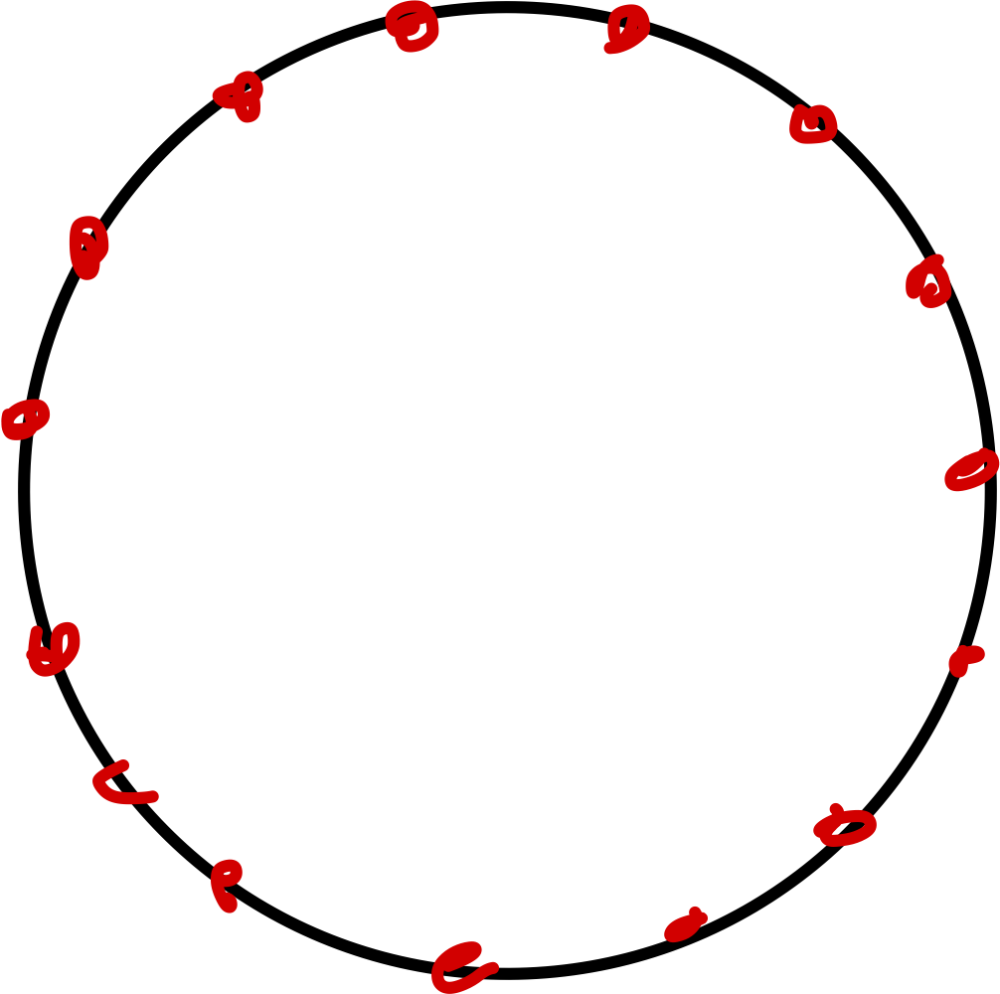
做个思想实验：假设所有模型点都在一个完美圆上。对于任意场景点 \(i\)，纯旋转优化中最差的情况，是估计 \(\theta\) 与最优旋转相差 180°，即 \(\pi\) 弧度，此时代价为 \(4r^2\)，其中 \(r\) 是圆半径。根据余弦定理，任意角度误差 \(\theta_{err} = \theta - \theta^*,\) 对应的距离平方为
。圆上的所有其他点贡献相同代价。它虽然不是凸函数，但每个极小值都是全局最优，只是以 \(2\pi\) 为周期重复。
即使几何更复杂、不是圆形，这个论证仍成立：每个点都绕圆运动，只是半径可能不同。随着 \(\cos\theta_{err}\) 趋近 1，所有模型点的误差都减小，因此每个极小值仍是全局最优。到这一步，我们其实还没有引入不良的局部极小值！
真正引入局部极小值的，是对应关系搜索，以及可能额外加入的约束。
4.5.5.1 预计算距离函数¶
非线性优化还有一个很好用的加速技巧，不过需要重新考虑场景点到模型的最小距离，而不再对所有点对分别计算。既然已经不显式枚举对应关系，我觉得这个调整并不算大的牺牲。把目标稍改为：
也就是先求每个场景点到模型的最小距离，再对它应用任意稳健损失。
嵌套的 \(\min\) 看起来计算量很大，但模型点固定，恰好可以通过预计算加速在线阶段。先把优化改写到模型坐标系，将内部项改为
。对任意三维点 \(x\)，预先计算它 \(x\) 到模型上所有点的最小距离，记为 \(\phi(x).\)；上面的项就变成 \(\phi({^OX^Wp^{s_i}}).\)。这种定义在三维空间中的函数叫作距离场，与符号距离函数（SDF）、水平集密切相关，也是几何建模中的常见表示。它正好能让我们快速计算大量场景点的代价。
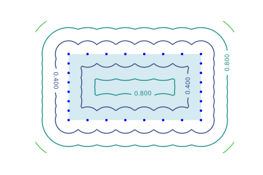
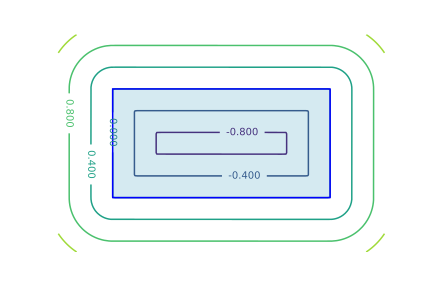
图 4.9：左图是以点集表示矩形时的距离函数等高线，右图是以二维网格表示矩形时的符号距离函数。网格表示的等高线更平滑，有助于缓解前面遇到的局部极小值问题。
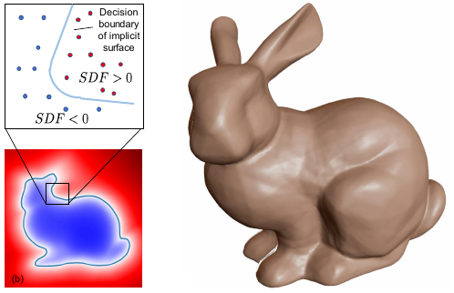
图 4.10：三维几何的符号距离函数（SDF）表示。经许可转载自 参考文献 3。
如上图所示，预计算距离函数不仅可以表示到点云的最小距离，也能表示到网格模型的最小距离。还可以仔细设计其他类似距离的三维函数，使其具有平滑的次梯度，更适合非线性优化。这方面文献很丰富，参考文献 18 是一篇不错的参考。
4.5.6 全局优化¶
能否利用已知对应关系时位姿估计的漂亮结构，同时搜索对应关系和位姿，并获得全局解？
一些算法声称能保证 ICP 目标的全局最优，通常使用分支定界，见 参考文献 19、参考文献 20、参考文献 21。但它们在真实点云上的表现让我们失望。我们也提出过一种方法，用分支定界显式枚举对应关系，配合截断最小二乘目标和较紧的 SE(3) 约束松弛，见 参考文献 22；不过它仍只适用于较小问题。
较新的 TEASER 方法，见 参考文献 12，采用了另一条路线：利用截断最小二乘在尺度和平移估计中可高效优化的性质，对旋转则求解目标函数的半定规划（SDP）松弛。松弛不一定紧，但和本章其他凸松弛一样，求解后很容易检查最优解是否满足原约束。而旋转矩阵二次约束 效果有时好得令人惊讶 的 SDP 松弛，参考文献 23！
4.6 非穿透约束与自由空间约束¶
前面有两条主要路线：利用 SVD 的方法和非线性优化。非穿透与自由空间约束通常非凸，因此更适合后者。不过，某些非穿透约束是凸的，例如点不能穿过一个半平面，此时也可纳入凸优化。下面用简单例子分别说明。
示例 4.8 用非线性优化处理非穿透约束¶
为简化讨论，只考虑二维，用
参数化旋转矩阵，并假设对应关系已知。不过别忘了，非线性优化框架也可以包含对应关系搜索。
求解：
加入非线性代价和约束时，把 Python 函数及与之绑定的决策变量传给 MathematicalProgram 的 AddCost、AddConstraint 方法即可。下面的 notebook 给出了实现：
运行示例：在 Colab 中打开
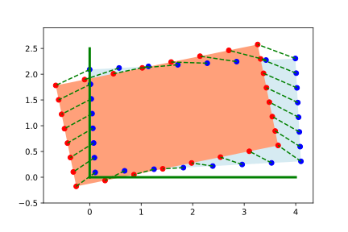
图 4.11：已知对应关系的带约束位姿估计。绿色线表示约束：估计位姿下所有点在世界坐标系中的 \(x\)、\(y\) 坐标都必须大于 \(0\)。红色场景点存在穿透，求解器返回的蓝色位姿则满足约束。
示例 4.9 用凸优化处理非穿透约束¶
这个二维例子可继续采用方便的旋转矩阵形式：
。它的约束简化为 \(a^2+b^2=1\)，虽然非凸，却可以松弛成 \(a^2 + b^2 \le 1.\)。这几乎就是前面的示例里可视化的问题，只是现在多了平移。松弛相当于将非凸的单位圆周约束，改为凸的单位圆盘约束。从此前的图来看，我们有理由期待它可能是紧的。
求解：
，其中 \(R\) 按上式依赖于 \(a, b\)。就像上一章加入约束后，必须从伪逆转向数值优化一样，这个问题也不能再直接用 SVD 求解。它属于二阶锥规划（Second-Order Cone Program，SOCP），不过要引入松弛变量，才能写成目标函数为线性的标准形式。
运行示例：在 Colab 中打开
注意：加入依赖 \(p\) 的约束之后，原来独立求 \(R\) 的方法不再直接成立，至少需要修改。notebook 给出了简单实现。
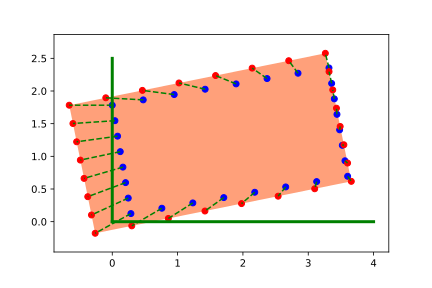
图 4.12：已知对应关系的约束位姿估计之凸近似。绿色线表示估计位姿下所有点在世界坐标系中的 \(x\)、\(y\) 坐标都必须大于 \(0\)。
这里特意用了一个比较极端的例子：场景点强烈地把箱子往约束边界里拉。可以看出松弛并不紧；为解释观测数据，箱子被稍微缩小了。
这类约束优化可以做得比较高效，中等规模点云也能放进 ICP 循环。但它只适用于凸的非穿透约束，或约束的凸近似，例如这里的半平面约束。对于场景中两个物体之间的非穿透，它大概就不太适合。
顺便说一句，能这么轻松地加入这个例子，其实很难得。我还不知道有哪个工具箱，能像 Drake 这样，把先进优化算法与几何、物理及动力系统工具结合起来。
4.6.1 把自由空间约束写成非穿透约束¶
我最早在 参考文献 24 中看到另一个很漂亮的思路……
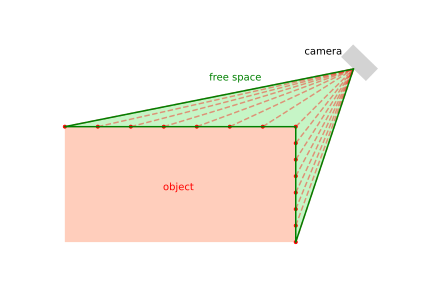
图 4.13：从相机到深度回波点的射线，定义了一种“自由空间障碍物”，其他物体不应穿入其中。
虽然我偏爱凸形式，因为它更易理解，也可能给出更强的算法保证，但非穿透和自由空间约束实在太有价值，不能忽略。如今深度学习往往能给出良好的初始猜测，也减轻了局部极小值的影响。希望一两年后你再读这些笔记，我已经能介绍这类复杂形式的有力结果。目前，对大多数应用，我会建议采用非线性优化，并充分利用这些约束。
4.7 跟踪¶
4.8 把各部分连接起来¶
现在可以把各部分接起来了。notebook 中，我把芥末酱瓶放在一个箱子里，先用 ICP 估计它的位姿，再像上一章那样规划简单轨迹，将它抓起并放入另一个箱子，最后用微分逆运动学执行。看着整套流程跑通，很有成就感！
运行示例：在 Colab 中打开
4.9 接下来往哪里走¶
几何方法可以严谨分析，这一点我很喜欢。但也要认真问问：我们优化的目标，真的合适吗？
即使只考虑几何，给所有点相同权重的最小二乘目标，也未必正确。想象一本又长又窄的书平放在桌上：边缘的深度回波可能很少，但这些点携带的信息，比封面上大量回波更有价值。给本章目标加入不同权重并不困难，难的是如何一般性地选择这些权重；纯几何方法目前还没有特别成功的答案。这个方向研究很多，但确实很难。
另外，几何再漂亮，我们到现在也几乎忽略了最重要的一类信息：颜色！虽然可以把颜色等特征纳入 ICP 流程，但很难为颜色空间定义简单、可靠的距离。同一物体在不同光照下颜色可能差别很大，不同物体的颜色又可能很相似。近年计算机视觉，尤其深度学习的进步，让这个问题出现了新希望。我最近问学生：“深度和颜色必须放弃一个，你选哪个？”答案几乎一边倒：“放弃深度，别拿走颜色！”这与几年前很不一样。直到 2019 年，几乎每年举行的六自由度物体位姿估计基准挑战中，几何方法仍优于深度学习，见 参考文献 10；到 2020 年，深度学习就已经追上了。
深度学习与几何当然可以，而且也许应该结合。2020 年挑战的优胜方法先用深度学习给出初始位姿，再利用深度通道和 ICP 变体做几何精修，见 参考文献 10。本章反复讨论、却尚未完全解决的点云对应关系，也是颜色和深度学习很有潜力的方向，见 参考文献 25。我们很快就会转向它们。
4.10 练习¶
练习 4.1 至少需要多少个点？¶
考虑已知对应关系的点云配准。将场景点与模型点直接对应，就能确定物体的位置和朝向。通常点数远多于位姿决策变量的数量，因此把每对对应关系作为等式约束会使问题过约束。这自然引出一个问题：
-
在二维中，至少需要几个点才能唯一确定物体位姿？简要说明原因。
-
在三维中，至少需要几个点才能唯一确定物体位姿？简要说明原因。
提示：如果对应关系未知，答案会怎样变化？
练习 4.2 旋转对称性¶
已知对应关系时，我们得到一个漂亮的点云配准问题：二次目标，加上二次等式约束，暂时忽略行列式约束。可有些物体具有旋转对称性，例如正方体。相差 90° 的旋转理应同样好，这个二次目标怎么体现它们？
练习 4.3 随机初始化 ICP¶
运行随机几何和随机真实位姿的 ICP 示例，就会发现：平移往往估计得不错，旋转却很差，至少我生成的这些物体是如此。一个补救方法是从多个不同旋转初值分别运行 ICP。这适用于许多存在局部极小值的非凸问题，这里尤其合适：点云即使复杂，搜索空间的维数仍低。少量样本就能较好地覆盖二维甚至三维旋转；三维可以考虑 UniformlyRandomRotationMatrix。这些运行还可以并行完成。
试着从多个初始估计 \(\hat{X}^O\) 启动 ICP，只对旋转采样。保留误差最低的结果，性能相比只运行一次能改善多少？
练习 4.4 旋转固定的点集配准¶
考虑 \(X^O\) 的旋转已知、平移未知的配准问题，也就是示例 4.2 的相反情况。
具体地，场景点 \({}^WX^C{}^Cp^{s_i}={}^Wp^{s_i}\) 定义为：
对应图形如下：
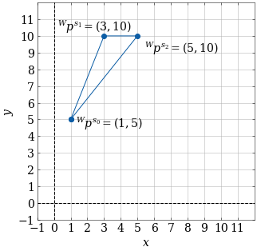
模型点定义为：
对应图形如下：
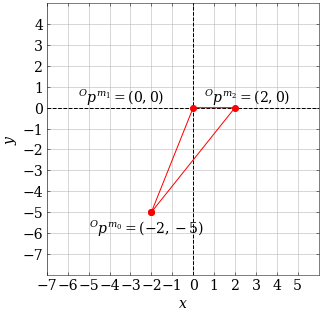
两个三角形朝向相同，所以 \(R^O= \begin{bmatrix} 1 & 0 \\ 0 & 1 \end{bmatrix}\)。但仍需求 \(X^O\) 的平移部分。
本例的模型与场景朝向已经一致，所以很容易将旋转和平移分开。不过，这种解耦对一般情况也成立，见正文示例 4.2 后的解释。
-
这个优化问题的决策变量是什么？请具体说明。
-
当 \(p^O = (0,0)\) 时，目标函数值是多少？取 (3, 10) 和 (6, 12) 又是多少？
-
以决策变量为坐标画出目标函数，会是什么形状？这意味着什么？
-
考虑一般情况：旋转固定，模型点与场景点数量相同，只需求平移。求解后，每个决策变量对应什么量？即使有噪声、两组点无法完全重合，答案也应成立。提示：最小化所有变换后场景点与对应模型点的距离平方和。
练习 4.5 平面两点 ICP¶
ICP 有很多局部极小值，它们具体是什么？初始猜测偏离多少，才会落入这些错误解？一般几何的分析可能很复杂，先看只有两个点的平面例子。
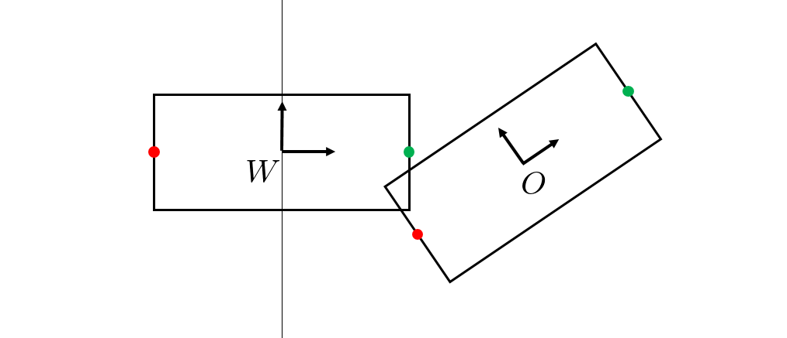
模型点与场景点在各自坐标系下为：
编号给出了真实对应关系，但算法并不知道它；ICP 只按最近邻选择。使用标准 ICP 的点对距离平方和，将二维位姿 \(X^O\) 参数化为 \(p_x,p_y,a,b\)，可写出优化问题：
-
如果初始位姿的最近邻对应恰好正确，证明 ICP 代价在 \(p_x,p_y,b=0\)、\(a=1\) 时最小。描述能够收敛到真实解的初始位姿集合。
-
如果初始位姿使对应关系颠倒，证明 ICP 代价在 \(p_x,p_y,b=0\)、\(a=-1\) 时最小。描述会收敛到这个错误解的初始位姿集合。
-
对应关系不必一一对应，按最近邻建立时尤其如此。构造数据矩阵 \(W\)，证明两个场景点都对应同一个模型点时，ICP 会停滞，且代价不为零。下一轮迭代会发生什么？提示：可假设零矩阵的 SVD 会给出单位矩阵 \(U\)、\(V\)。
练习 4.6 兔子模型的 ICP¶
本题要求实现 ICP，将两组 Stanford bunny 点云配准。所有工作都在 对应 notebook 中完成，具体包括：
-
实现已知对应关系下的最小二乘刚体变换计算。
-
利用 (a) 的方法实现 ICP。
练习 4.7 RANSAC¶
本题将用 RANSAC 从 Stanford bunny 点云中移除环境背景。所有工作都在 对应 notebook 中完成，具体包括：
-
实现 RANSAC 算法。
-
用 RANSAC 从场景点云中移除平面。
练习 4.8 ICP 中的离群点¶
本题探讨 ICP 处理离群点的一种方法，并考察距离度量怎样影响稳健性。题目分为两部分，每部分有三个小问。
-
考虑下图。黑色模型点标为 \(b_{i}\)，红色场景点标为 \(r_{j}\)。
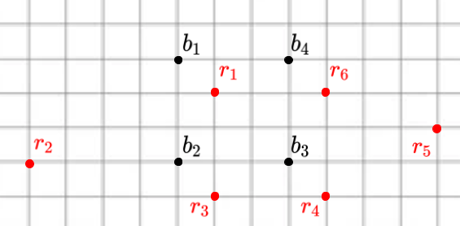
我们尝试用以下方式处理离群点：
-
先写出每组对应关系，即 (\(b_{i}, r_{j}\)) 点对，再计算 ICP 误差：各对应点之间的距离平方和。
-
已知场景点中有 \(\frac{1}{3}\) 是离群点。根据各 \(b_{i}\) 与 \(r_{j}\) 之间的距离，哪两个场景点 \(r_{j}\) 最可能是离群点？
-
删掉这两个疑似离群点，再计算 ICP 误差。
这就是截尾 ICP（Trimmed ICP）的基本思路。
-
ICP 用对应点的欧氏距离平方和度量两组点的差异。另一个可能、但不太便于优化的度量是单向 Hausdorff 距离。直观地说，对手先在一个形状上选一个点，你必须走到另一个形状的最近点，这段距离就是该选择下的距离。考虑两种方案：方案 1 中，对手选场景点，你选最近模型点；方案 2 中，对手选模型点，你选最近场景点。哪种对离群点更稳健？下面用二维例子考察。黑色模型点标为 \(b_{i}\)，红色场景点标为 \(r_{j}\)。
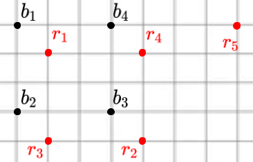
-
先看方案 1：作为对手，我选场景点 \(r_{5}\)。你能选的最近模型点 \(b_{i}\) 是哪个？距离是多少？
-
再看方案 2：我选模型点 \(b_{1}\)。你能选的最近场景点 \(r_{j}\) 是哪个？距离是多少？
-
据此，哪种方案对离群点更稳健？
练习 4.9 位姿估计¶
回到第 3 章的例子，但取消已知红色泡沫砖位姿的假设。你会得到先前场景中深度相机生成的原始仿真点云，需要先分割，再用 ICP 估计砖块位姿。所有工作都在 对应 notebook 中完成，具体包括：
-
分割原始点云，移除背景。
-
使用课程中的 ICP 实现，正确估计红色泡沫砖的位姿。
练习 4.10 组合符号距离函数（SDF）¶
本题探讨符号距离函数及其组合。回顾一下：某个集合的 SDF 给出点 \(p\) 到集合边界的最小距离，符号由点 \(p\) 在边界内还是边界外决定。内部为负，外部为正。
看下图绿色方框。中心位于原点，到各边距离为 1，且在内部，所以 SDF 值为 −1。边界上的点为 0，外部点为 \(+d\)，其中 \(d\) 是到边界的最短距离。
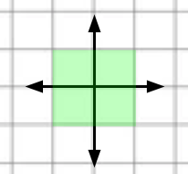
下图有红、蓝两个阴影物体；把它们视为无限半平面，重叠处为紫色。用 \(\phi_r(p)\) 表示点 \(p\) 到红色物体边界的符号距离，\(\phi_b(p)\) 表示点 \(p\) 到蓝色边界的符号距离。例如 \(\phi_b(p_0) = -3, \phi_b(p_1) = +2\)。
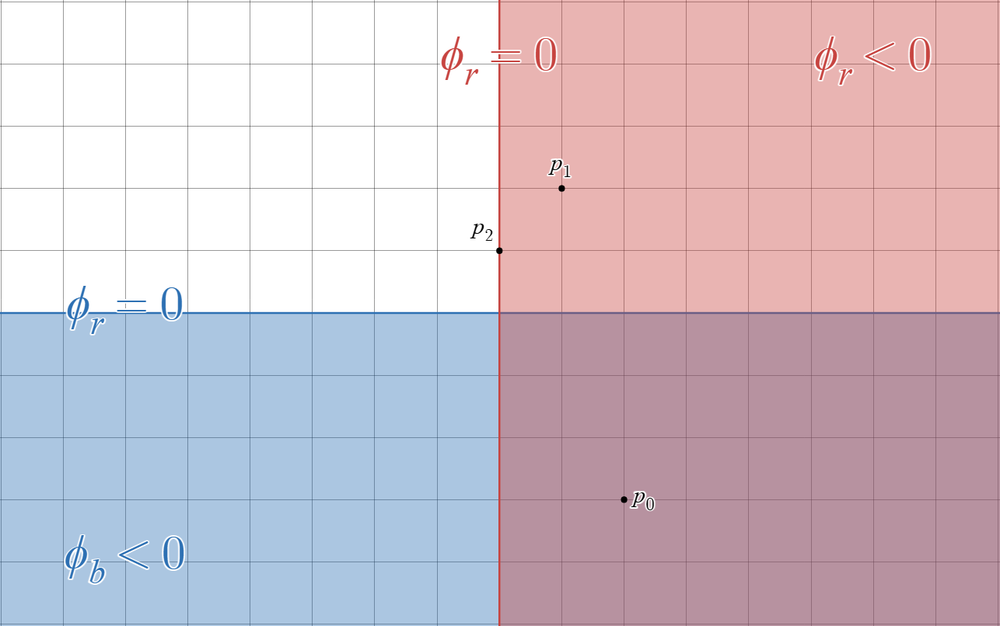
-
先考虑红、蓝物体的并集。令 \(\phi_{r \cup b}(p)\) 为点 \(p\) 到新边界的符号距离，计算 \(\phi_{r \cup b}(p_{0}), \phi_{r \cup b}(p_{1}), \phi_{r \cup b}(p_{2})\)。
-
再考虑交集，即紫色区域。令 \(\phi_{r \cap b}(p)\) 为点 \(p\) 到新边界的符号距离，计算 \(\phi_{r \cap b}(p_{0}), \phi_{r \cap b}(p_{1}), \phi_{r \cap b}(p_{2})\)。
-
根据 (a)，写出二维空间中任意点 \(p\) 到红、蓝物体并集的符号距离，用 \(\phi_r(p)\)、\(\phi_b(p)\) 表示。建议先按点所在区域分类。提示：先分四种区域，再尝试整理成只有两种情况的简洁表达式。
-
根据 (b)，类似地写出任意点 \(p\) 到交集，即紫色区域的符号距离，用 \(\phi_r(p)\)、\(\phi_b(p)\) 表示。只需考虑两种情况。
直接取两个物体 SDF 的最小值，并不能正确计算并集的 SDF。请想一想为什么！不过，虽然距离可能不对，符号却始终正确，也请验证这一点。因此，这个“错误”的方法仍能判断点是否进入并集内部，非常适合构造非穿透约束。下面把它称为“穿透约束 SDF”，看看怎么使用。
- 如课上所述，刚体的 SDF 可以预计算，大幅加快后续运算。但机械臂这类铰接物体的整体几何随关节值变化，无法预计算整体 SDF；每次位形变化都重算也很昂贵。DART（Dense Articulated Real-Time Tracking，稠密铰接物体实时跟踪）算法，见 参考文献 24，为每根连杆保留一个“局部”SDF，输入是在该连杆坐标系下表达的点，因此可以预计算。考虑下图熟悉的平面二连杆机械臂。给定 \(q_{0}, q_{1}\)，以及 AB、BC 两根连杆预计算的局部 SDF，简述怎样计算点 \((^{W}x_{p}, ^{W}y_{p})\) 的整体穿透约束 SDF。
,
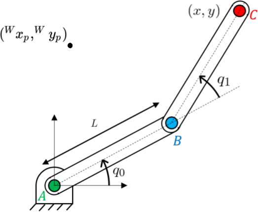
练习 4.11 用几何感知操作未知初始位姿的模型¶
本题接着上一章的练习 3.14，仍让机器人抓取、摆放代表姓名首字母的字母模型。不过，这次不再假设已知初始位姿，而要利用深度相机和几何感知。请在下面的 notebook 中完成。
运行示例：在 Colab 中打开
具体步骤如下：
-
创建包含机器人、桌子、姓名首字母模型和三台 RGB-D 传感器的场景。
-
用 RGB-D 传感器获取字母模型的点云。
-
用 ICP 估计字母模型在世界坐标系中的位姿。
-
利用估计位姿，以及练习 3.14 的微分 IK 控制器，抓取并摆放字母模型。
参考文献¶
-
Krishna Shankar and Mark Tjersland and Jeremy Ma and Kevin Stone and Max Bajracharya , "A learned stereo depth system for robotic manipulation in homes" , IEEE Robotics and Automation Letters , vol. 7, no. 2, pp. 2305--2312, 2022 .
-
Chris Sweeney and Greg Izatt and Russ Tedrake , "A Supervised Approach to Predicting Noise in Depth Images" , Proceedings of the IEEE International Conference on Robotics and Automation , May, 2019 . 文献链接
-
Jeong Joon Park and Peter Florence and Julian Straub and Richard Newcombe and Steven Lovegrove , "DeepSDF: Learning Continuous Signed Distance Functions for Shape Representation" , Proceedings of the IEEE International Conference on Computer Vision and Pattern Recognition (CVPR) , June (To Appear), 2019 . 文献链接
-
Ben Mildenhall and Pratul P Srinivasan and Matthew Tancik and Jonathan T Barron and Ravi Ramamoorthi and Ren Ng , "Nerf: Representing scenes as neural radiance fields for view synthesis" , Communications of the ACM , vol. 65, no. 1, pp. 99--106, 2021 .
-
Berthold K.P. Horn , "Closed-form solution of absolute orientation using unit quaternions" , Journal of the Optical Society of America A , vol. 4, no. 4, pp. 629-642, April, 1987 .
-
Andriy Myronenko and Xubo Song , "On the closed-form solution of the rotation matrix arising in computer vision problems" , arXiv preprint arXiv:0904.1613 , 2009 .
-
Robert M Haralick and Hyonam Joo and Chung-Nan Lee and Xinhua Zhuang and Vinay G Vaidya and Man Bae Kim , "Pose estimation from corresponding point data" , IEEE Transactions on Systems, Man, and Cybernetics , vol. 19, no. 6, pp. 1426--1446, 1989 .
-
Marius Muja and David G Lowe , "Flann, fast library for approximate nearest neighbors" , International Conference on Computer Vision Theory and Applications (VISAPP’09) , vol. 3, 2009 .
-
Bertram Drost and Markus Ulrich and Nassir Navab and Slobodan Ilic , "Model globally, match locally: Efficient and robust 3D object recognition" , 2010 IEEE computer society conference on computer vision and pattern recognition , pp. 998--1005, 2010 .
-
Tomás Hodan and Martin Sundermeyer and Bertram Drost and Yann Labbé and Eric Brachmann and Frank Michel and Carsten Rother and Jirí Matas , "BOP Challenge 2020 on 6D Object Localization" , European Conference on Computer Vision Workshops (ECCVW) , 2020 .
-
M.A. Fischler and R.C. Bolles , "Random Sample Consensus: A Paradigm for Model Fitting with Applications to Image Analysis andd Automated Cartography" , Communications of the Association for Computing Machinery (ACM) , vol. 24, no. 6, pp. 381--395, 1981 .
-
Heng Yang and Jingnan Shi and Luca Carlone , "Teaser: Fast and certifiable point cloud registration" , arXiv preprint arXiv:2001.07715 , 2020 .
-
Pat Marion and Peter R. Florence and Lucas Manuelli and Russ Tedrake , "A Pipeline for Generating Ground Truth Labels for Real RGBD Data of Cluttered Scenes" , International Conference on Robotics and Automation (ICRA), Brisbane, Australia , May, 2018 . 文献链接
-
Anh Nguyen and Bac Le , "3D point cloud segmentation: A survey" , 2013 6th IEEE conference on robotics, automation and mechatronics (RAM) , pp. 225--230, 2013 .
-
Andriy Myronenko and Xubo Song , "Point set registration: Coherent point drift" , IEEE transactions on pattern analysis and machine intelligence , vol. 32, no. 12, pp. 2262--2275, 2010 .
-
Wei Gao and Russ Tedrake , "FilterReg: Robust and Efficient Probabilistic Point-Set Registration using Gaussian Filter and Twist Parameterization" , Conference on Computer Vision and Pattern Recognition (CVPR) , June, 2019 . 文献链接
-
Andrew W Fitzgibbon , "Robust registration of 2D and 3D point sets" , Image and vision computing , vol. 21, no. 13-14, pp. 1145--1153, 2003 .
-
Stanley Osher and Ronald Fedkiw , "Level Set Methods and Dynamic Implicit Surfaces" , Springer , 2003 .
-
Natasha Gelfand and Niloy J Mitra and Leonidas J Guibas and Helmut Pottmann , "Robust global registration" , Symposium on geometry processing , vol. 2, no. 3, pp. 5, 2005 .
-
Nicolas Mellado and Dror Aiger and Niloy J Mitra , "Super 4pcs fast global pointcloud registration via smart indexing" , Computer Graphics Forum , vol. 33, no. 5, pp. 205--215, 2014 .
-
Jiaolong Yang and Hongdong Li and Dylan Campbell and Yunde Jia , "Go-ICP: A globally optimal solution to 3D ICP point-set registration" , IEEE transactions on pattern analysis and machine intelligence , vol. 38, no. 11, pp. 2241--2254, 2015 .
-
Gregory Izatt and Hongkai Dai and Russ Tedrake , "Globally Optimal Object Pose Estimation in Point Clouds with Mixed-Integer Programming" , International Symposium on Robotics Research , Dec, 2017 . 文献链接
-
James Saunderson and Pablo A Parrilo and Alan S Willsky , "Semidefinite descriptions of the convex hull of rotation matrices" , SIAM Journal on Optimization , vol. 25, no. 3, pp. 1314--1343, 2015 .
-
Tanner Schmidt and Richard Newcombe and Dieter Fox , "DART: dense articulated real-time tracking with consumer depth cameras" , Autonomous Robots , vol. 39, no. 3, pp. 239--258, 2015 .
-
Peter R. Florence* and Lucas Manuelli* and Russ Tedrake , "Dense Object Nets: Learning Dense Visual Object Descriptors By and For Robotic Manipulation" , Conference on Robot Learning (CoRL) , October, 2018 . 文献链接
继续阅读：上一章：基本的抓取与放置（中文） · 全书目录与前言（中文） · 下一章：箱内抓取（中文）
无障碍访问 · © Russ Tedrake, 2026